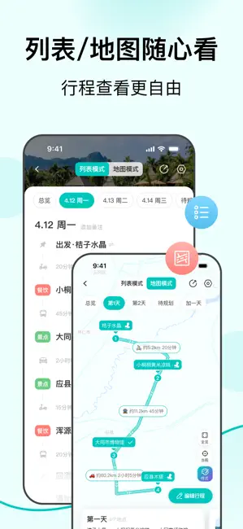

为什么 VoyaGO 要把规划、导航、记账揉成一个 App？
从版本迭代轨迹看 VoyaGO 的产品取舍——一个旅行工具为什么选择做"一站式"，这套设计对谁有用、对谁没用，以及它绕不开的几个技术代价。
我用过不少旅行类 App，早年携程攻略看景点、穷游行程助手排路线、高德地图当导航、回来随手记对账——每次旅行下来至少装三四个 App，数据散在各处，回来整理行程就是一场手动拼接地狱。后来偶然发现了VoyaGO官网上这套产品，我第一反应是：又来一个想一锅端的？
但仔细翻了它的版本更新记录后发现，它和那些"大而全"的旅行工具走的不是同一条路。问题不在于它功能多，而在于它功能之间是怎么连接的。
它在哪个环节有独到之处
大多数旅行工具的产品逻辑是按阶段切割的：规划阶段用行程助手，出发后切导航，回来再开记账 App。VoyaGO 的思路反过来——它以"行程"这条主线为骨架，把每个环节需要的能力往骨架上挂，而不是各环节各自为战。
这个思路不是一开始就想清楚的。从版本轨迹能看出来：1.0.20（2024 年 5 月）先出了多人记账分账——这是规划阶段完全用不上的功能；1.2.4 增强成员统计，1.4.0 加入"按地点记账"，1.5.1 再增强为"支持按地点和交通记账"；直到 1.5.5（2025 年 3 月）才补上目的地天气查询这个规划阶段的辅助。
这种"摸着石头过河"式的迭代其实暴露了 VoyaGO 的核心设计假设：用户最痛的不是缺少某个功能，而是多个环节之间数据不连贯。一个行程里的地点、交通、费用、天气，如果散在不同 App 里，哪怕每个 App 都做到 80 分，拼起来的体验也远不如一个把所有数据攥在手里但单项只做 60 分的工具。
内部设计：一条行程骨架挂所有能力
从VoyaGO下载拿到 App 打开一条行程就能直观感受到这套设计——它的架构其实很朴素，把每条行程当成一棵带节点的树：根节点是行程本身，子节点是地点、交通、协作者、费用。每个功能模块只负责往树上挂载数据，不自己搞独立存储。
举个例子说清楚。假设你规划了一条"北京一日游"：上午故宫、下午天坛、晚上三里屯。在 VoyaGO 里，这三个地点是行程下的三个节点。
- 天气模块往每个地点节点上挂一份当天的天气预报（1.5.5 版本后）
- 记账模块可以往故宫节点上挂一条"门票 ¥60"、往交通节点上挂一条"高铁 G1234 ¥553"（1.5.1 版本后支持绑定交通记账）
- 地图模块把这三个地点连成一条线，切换到导航模式时直接从当前位置蓝点连线到下一个节点
- 多人协作时，任何一个协作者往树上加的东西，其他人实时看到
这种设计最聪明的地方在地图模式。VoyaGO 没有自己做一套完整的导航引擎——它的地图功能本质上是"行程路线预览 + 快速跳转调用"。规划阶段看的是同一套地图界面，旅行中想看导航时，点击标记点直接调起系统地图 App（高德、百度、Google Maps 都行）。这是个非常克制的取舍：不和专业导航 App 正面竞争，只做"行程上下文"的搬运工。

多人协作：骨架上长出的横向连线
VoyaGO 从行程工具向"旅行全流程管理工具"扩展的标志性一步，是 1.0.20 版本引入的多人记账分账。但真正有意思的不是记账本身，而是它怎么把协作这件事也挂进行程骨架里。
传统的多人记账工具（比如 AA 制管家）是独立结构：建一个账本、邀请成员、各记各的、最后算差额。VoyaGO 把协作成员当成行程的另一种子节点——每个成员的头像、付款记录、应该分担的份额，都和行程节点绑定在一起。主协调者可以在聊天群发一张当前行程地图的截图对齐路线，某个成员到点打卡后其他人实时看到"他已经到了，可以往那走了"，有人临时改了行程顺序大家的地图同步更新。
这件事说起来简单，但背后的产品逻辑有本质区别：协作不是一个独立模块，而是行程骨架上的横向连线。所以当一个人加了一条费用，这条费用天然知道它属于哪个行程、哪个地点、哪个付款人，不需要二次关联。
但这套设计也有代价。VoyaGO 的记账功能目前只支持全组分摊（或手动计算后拆成多条），不支持"某笔费用只涉及两个人分摊"这种更细粒度的场景。路线优化算法是否自动考虑天气因素也还没确认——我查了VoyaGO文档，目前只提到天气数据会展示，是否参与路线计算官方没有明确说明。骨架搭好了，但挂在上面的每个"挂件"本身并不总是专业的。
这套设计的代价是什么
说了这么多好处，得说实话：VoyaGO 不打算把每个模块都做深。
- 记账不如专业 AA 工具灵活（没有部分成员参与某条费用分摊的选项）
- 地图导航不如高德/百度精确（境外可能依赖 Google Maps 数据，精度取决于当地覆盖）
- 天气预报本身有不确定性，3 天以上的预报准确率有限，极端天气预警可能滞后
- Pro 会员的"终身买断"（¥98~128）在互联网产品里是个有风险的承诺——开发者没有公开的停运保障或退款政策，一旦停止运营终身 Pro 就失效
这些不是功能遗漏，而是设计取舍的必然结果。VoyaGO 选择了"把数据攥在手里"这条路，就必须在单项深度上做妥协。如果它某天突然把导航做到高德的精度、记账做到随手记的灵活性，那时候你看到的就不是现在这个轻量的"一站式"工具了，而是另一个臃肿的旅行全家桶。
适合谁，不适合谁
如果你每年有 3 次以上多人旅行，讨厌跨 App 同步数据的麻烦，VoyaGO 的"骨架 + 挂件"设计刚好解决了你的核心痛点。特别是出发前规划阶段——天气和行程地点打通、路线布局一眼看清、多人能实时对齐修改，这些体验在拆开的 App 组合里几乎不可能流畅实现。
但如果你是那种对单项功能有深度要求的用户：比如需要详细的导航轨迹和离线地图包、需要复杂的预算分析和图表、需要专业拍照滤镜——VoyaGO 注定满足不了你。它就像瑞士军刀，每个刀片都能用，但没有一个能当专业菜刀。
另外还有一个隐形门槛：Pro 订阅策略。月度 ¥12 适合短期旅行季用，年度 ¥119 折算下来不到一顿外卖钱，终身买断看起来很诱人但三年以上才回本。最保险的路径是先用免费版、月度 Pro 体验几个月，真的离不开再考虑年卡或终身——别上来就买终身，互联网产品里"终身"这俩字从来不是保险箱。
一点后记
我特意去翻了它的文档，发现了一个很有意思的细节：VoyaGO 的结算建议会"尽量减少转账笔数（优化转账路径），而不是让每个人互相转"。这个小细节透露出整个产品的基因——它的目标从来不是做一个功能最全的旅行工具，而是做一个让多人旅行的"最后一公里"变简单的脚手架。规划、导航、记账，每一件事单独拿出来都有比它做得更好的工具，但当这些事之间的切换摩擦被消掉，它就有了自己不可替代的价值。
不想用 Pro 订阅的话，免费版功能已经够用，相关资料我顺手在GitHub、Gitee、GitCode 三个仓库都同步了一份，国内访问走 Gitee 或 GitCode 更顺畅。